This is a step-by-step guide to the workflows used in OMERO training sessions and the videos produced to illustrate the basic Fiji-OMERO image analysis workflows. Links to the videos are in the Other resources section at the bottom of the page.
Instructions on downloading and installing the OMERO.insight-ij plugin for Fiji and ImageJ are in the Using ImageJ with OMERO section.
Open the Fiji application.
Select Plugins > OMERO > Connect to OMERO.
A version of OMERO.insight will open and can be used as normal.

As ImageJ needs to load the plugin software, it can take a minute or two for the OMERO login screen to appear, and then another minute for the progress bar to start moving and complete.
If you have not previously connected to OMERO, enter the server address.
Enter your OMERO Username and Password.
Click Login.


In the OMERO.insight window, select the image you wish to work with.
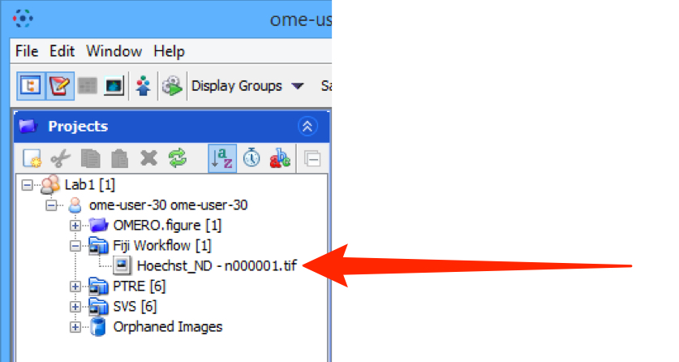
Right-click on the image and select View in ImageJ....
In the Bio-Formats Import Options dialog, click OK.
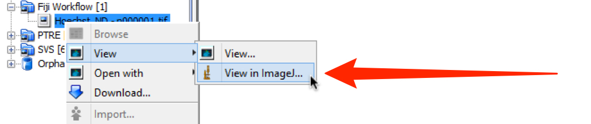
In Fiji, select Image > Adjust > Threshold.
Click on the Auto button, which should bring up the default for the image.
If necessary use the sliders to adjust the threshold values to obtain the desired thresholding.
Select the Dark Background checkbox.
Click Apply and close the dialog.
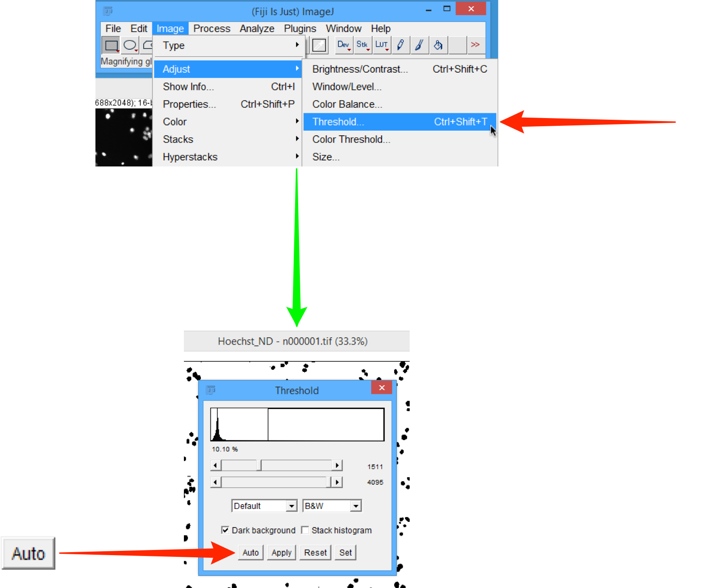
Select Analyze > Analyze Particles.
In the Analyze Particles dialog, check the values are as shown below, ensuring the Display Results, Clear Results and Add to Manager checkboxes are selected.
Click OK.
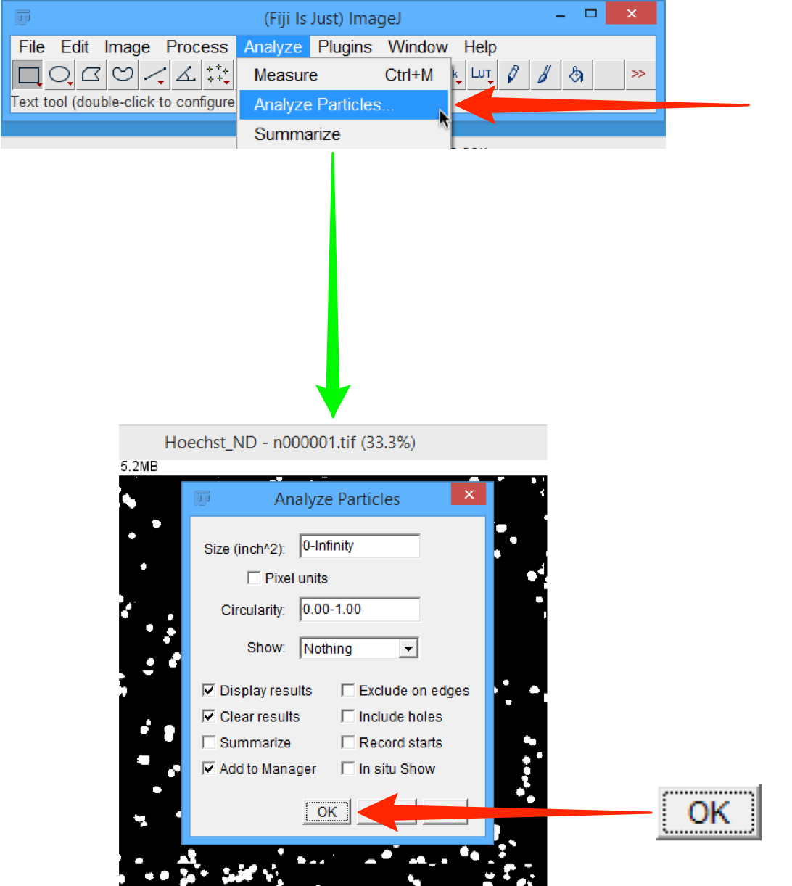
The following dialogs should be visible:
- the image with ROIs highlighted
- Results table
- ROI Manager
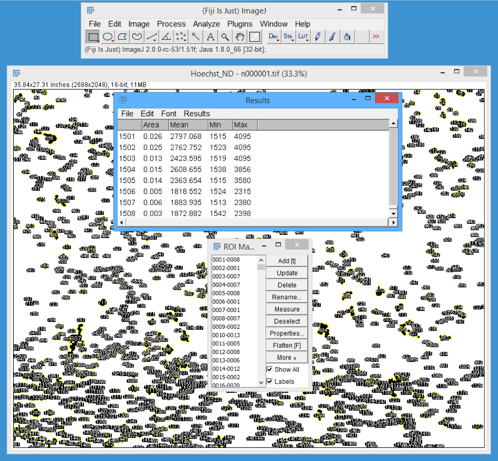
In Fiji, select Plugins > OMERO > Save Results to OMERO.
Note: If you are not logged into the OMERO server you will be prompted to log in.
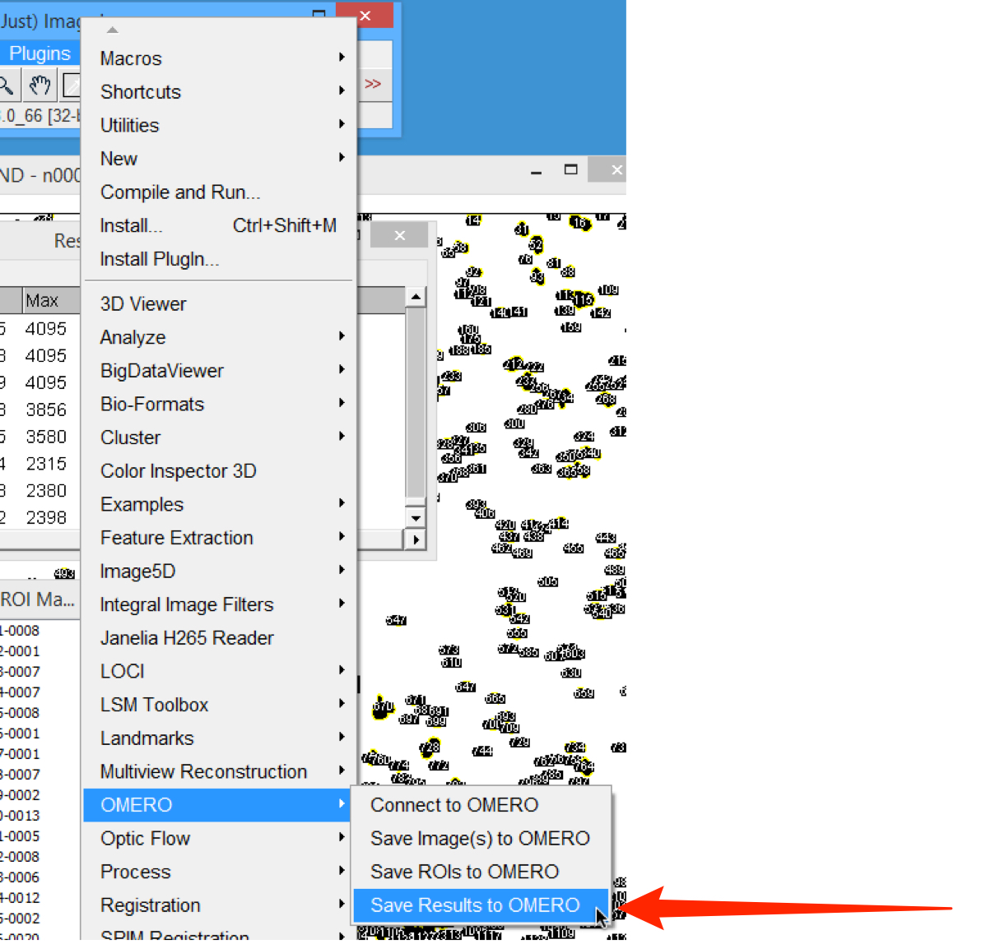
In the Save ImageJ Results dialog select the Image from Current Window radio button.
Check the ROI and Measurements checkboxes.
Click Save.
Click Yes in the Import Images dialog.
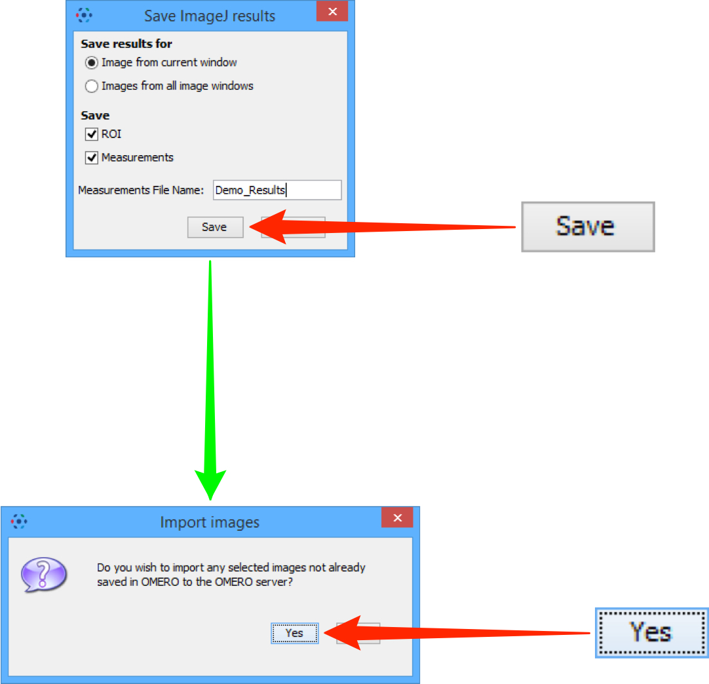
In the Import Location dialog, select the Project and/or Dataset from the drop-downs to save the results to.
Click Add to the Queue.
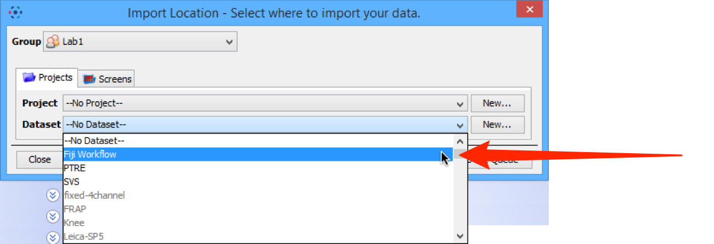
Once the import is completed, the OMERO server takes a little time to generate the ROIs in OMERO form.
Once the ROI generation process is complete, select the imported image to show the ROIs attached.
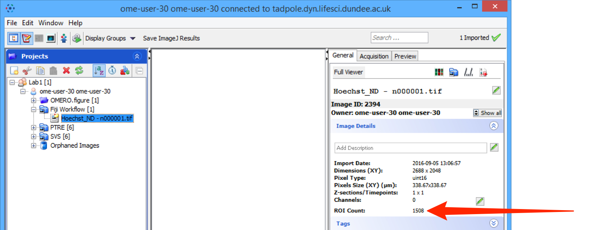
Open Fiji.
Use File > Open... to select and open the omero_batch_analysis.py file.
The jython script will open in the script window.
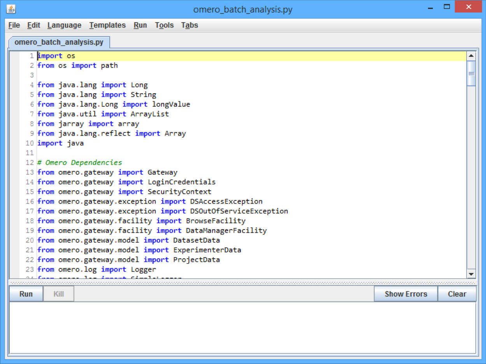
Edit the following:
Line 131:
From: HOST = "omero-latest-analysis.docker.openmicroscopy.org"
To: HOST = "your.omero.server.url"
Line 133:
From: datasetId = "1"
To: datasetId = "x"
Where "x" is an OMERO Dataset ID of your choice.
Line 139:
From: CREDENTIALS = "/Users/bramalingam/Desktop/FijiDemonstration/credentials.txt"
To: CREDENTIALS = "PATH_TO/credentials.txt"
Line 142:
From: macroFilePath = "/Users/bramalingam/Desktop/FijiDemonstration/bg_subtract.ijm"
To: macroFilePath = "PATH_TO/bg_subtract.ijm"
Line 145:
From: paths = "Users/bramalingam/Desktop/FijiDemonstration"
To: paths = "PATH_TO"
Where "PATH_TO" is the file path on your system to the files you downloaded previously.
Use File > Save to save the script file.
Use File > Open... to select and open the credentialsTemplate.txt file.
Enter the following using the OMERO login credentials you have been given:
Line 1:
From: USERNAME = <OMERO USERNAME>
To: USERNAME = <your_username>
Line 2:
From: PASSWORD = <OMERO PASSWORD>
To: PASSWORD = <your_password>
Use File > Save As > Text... to save the credentials file as credentials.txt in the same directory.
Click the Run button to run the script.
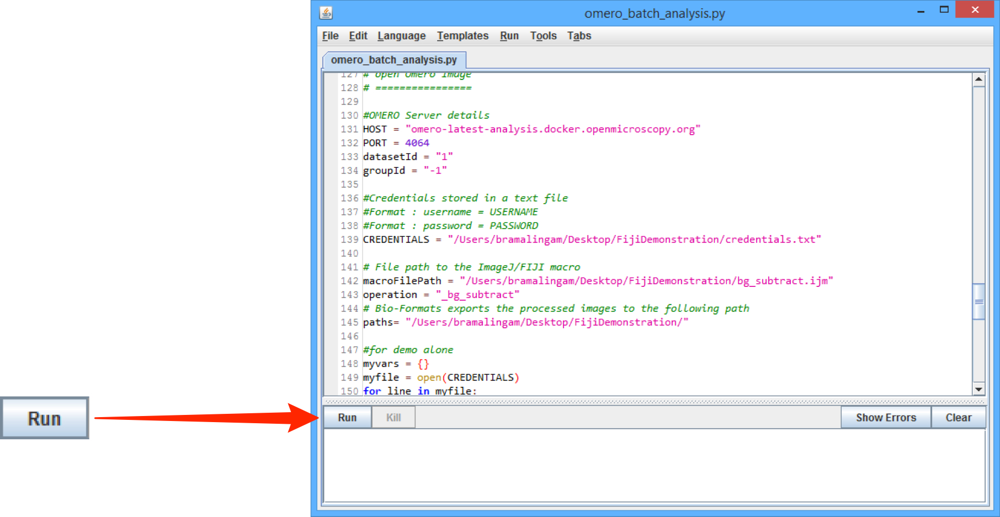
Once the script is completed, use OMERO to check the processed images which should be found in the dataset with the ID used in Step 2, Line 133.
Repeat Steps 5 - 7.
To run the same macro on a different set of Images, in Step 2 Line 133, enter a different Dataset ID number.
Repeat Steps 5 - 7.
To run a different macro on the same set of Images, in Step 2 Line 142, enter a different .ijm file name.
Repeat Steps 5 - 7.
All Tutorial Material is available on line at: help.openmicroscopy.org
The Main OME website is at: www.openmicroscopy.org